Introduction to Livestock Diseases
Healthy livestock are essential for dairy production, meat production and sustainable farming. Cattle, buffalo, sheep and goats can develop infectious, nutritional, metabolic and reproductive diseases.
Early recognition of clinical signs and timely veterinary attention can help protect animal health and reduce farm losses.
Common Clinical Signs in Livestock
- Loss of appetite or reduced feed intake
- Fever and unusual body temperature
- Coughing, nasal discharge or difficulty breathing
- Diarrhoea or abnormal faeces
- Reduced milk production
- Lameness or difficulty standing
- Abnormal swelling or wounds
- Changes in behaviour or activity
These signs may occur in different diseases. A proper examination is necessary to identify the cause.
Major Categories of Livestock Diseases
1. Infectious Diseases
Diseases caused by viruses, bacteria, parasites and other infectious agents. Examples include foot-and-mouth disease, mastitis and parasitic infections.
2. Nutritional Diseases
Problems associated with inadequate or unbalanced nutrition, mineral deficiencies and poor feeding management.
3. Metabolic Diseases
Conditions associated with disturbances in the animal's metabolism, particularly around calving and early lactation.
4. Reproductive Diseases
Conditions affecting fertility, pregnancy, calving and reproductive performance.
Veterinary Diagnosis
Veterinary diagnosis may involve:
- Taking a complete animal history
- Clinical examination
- Temperature and vital sign assessment
- Laboratory testing when indicated
- Evaluation of feed, housing and farm conditions
Veterinary Treatment Principles
Treatment depends on the confirmed or suspected diagnosis, animal species, age, body weight, pregnancy status and overall clinical condition.
- Identify and address the underlying cause.
- Provide appropriate supportive care.
- Use medicines only when clinically indicated.
- Follow correct veterinary dosage and treatment protocols.
- Observe withdrawal periods for milk and meat.
- Monitor recovery and reassess when necessary.
Important: This article is for educational purposes. Do not administer antibiotics, hormones or other medicines without an appropriate veterinary assessment. Seek urgent veterinary care for severe breathing difficulty, collapse, inability to stand or suspected contagious disease.
Disease Prevention and Farm Biosecurity
- Follow a locally appropriate vaccination programme.
- Quarantine newly purchased or sick animals.
- Maintain clean housing and feeding areas.
- Provide safe drinking water and balanced nutrition.
- Control internal and external parasites appropriately.
- Keep regular veterinary health records.
Our Educational Mission
VetCare World aims to connect farmers, veterinary doctors and livestock professionals through accessible knowledge, practical learning and responsible animal care.
ہمارا مقصد کسانوں اور ویٹرنری ڈاکٹروں کو مویشیوں کی صحت اور بیماریوں کے متعلق مستند تعلیمی معلومات فراہم کرنا ہے۔
All 36 Veterinary Disease Guides
Browse the complete disease library. Select any disease to open its dedicated veterinary guide.
Showing 36 disease guides
 Mastitis in Cattle and BuffaloOpen guide →
Mastitis in Cattle and BuffaloOpen guide →
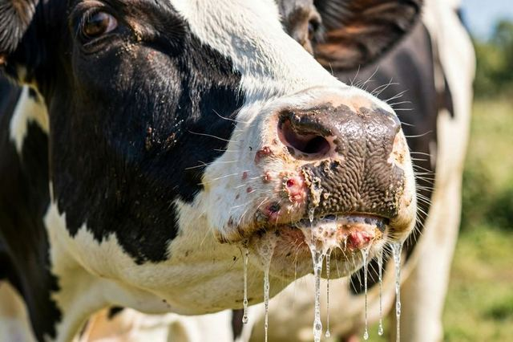
Foot-and-Mouth Disease (FMD) in Cattle and BuffaloOpen guide → Hemorrhagic Septicemia (HS) in Cattle and BuffaloOpen guide →
Hemorrhagic Septicemia (HS) in Cattle and BuffaloOpen guide →
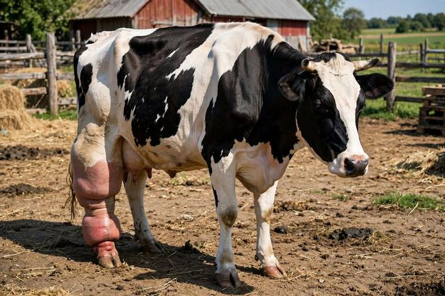
Black Quarter (Blackleg) in CattleOpen guide →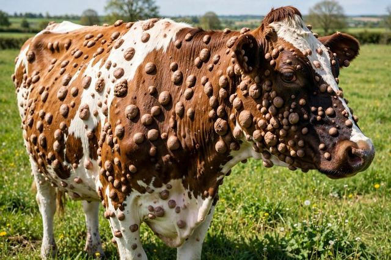
Lumpy Skin Disease (LSD) in CattleOpen guide →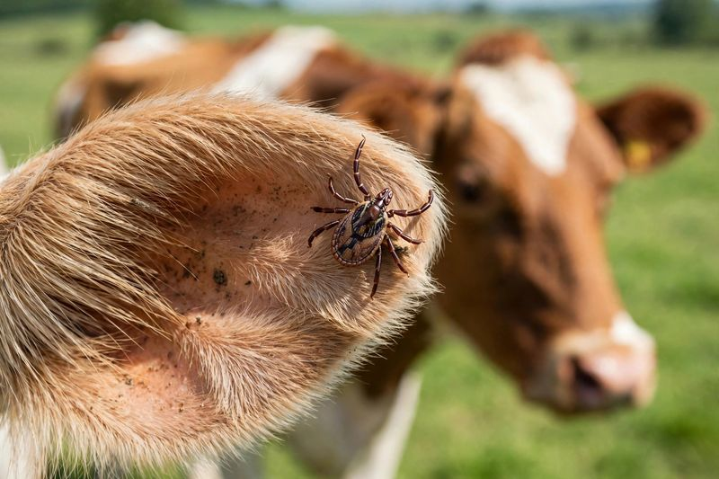
Theileriosis in Cattle: Signs, Diagnosis and ControlOpen guide → Bovine BabesiosisOpen guide →
Bovine BabesiosisOpen guide →
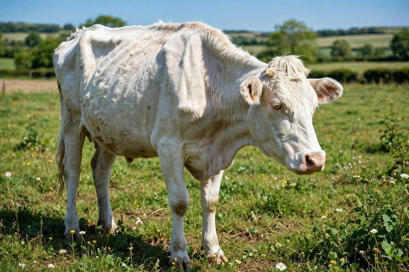
Bovine AnaplasmosisOpen guide →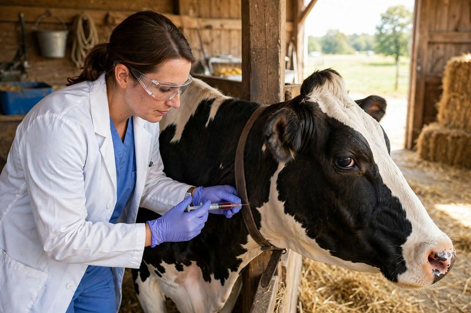
Brucellosis in Cattle and BuffaloOpen guide →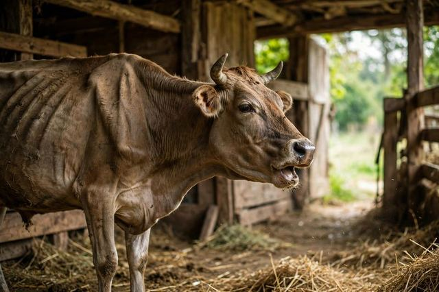
Bovine Tuberculosis (bTB)Open guide → Bovine Viral Diarrhea (BVD)Open guide →
Bovine Viral Diarrhea (BVD)Open guide →
 Infectious Bovine Rhinotracheitis (IBR)Open guide →
Infectious Bovine Rhinotracheitis (IBR)Open guide →
 Calf Diarrhea (Neonatal Calf Scours)Open guide →
Calf Diarrhea (Neonatal Calf Scours)Open guide →
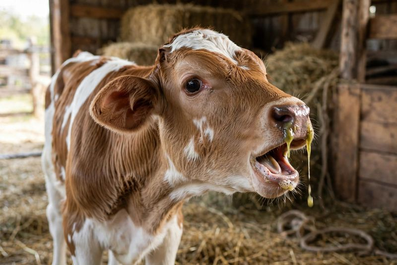
Pneumonia in CalvesOpen guide →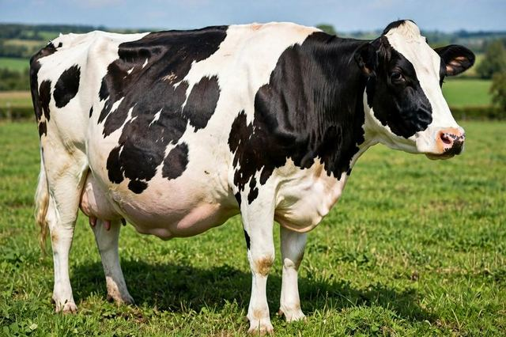
Ruminal Bloat in CattleOpen guide → Milk Fever (Hypocalcemia) in Dairy CowsOpen guide →
Milk Fever (Hypocalcemia) in Dairy CowsOpen guide →
 Ketosis in CattleOpen guide →
Ketosis in CattleOpen guide →
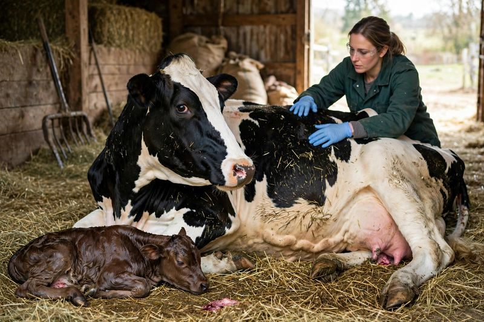
Postpartum Metritis in Dairy CowsOpen guide →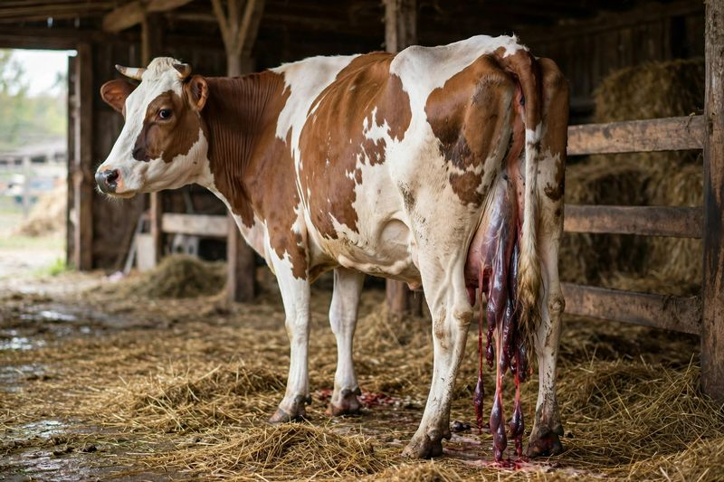
Retained Fetal Membranes in CowsOpen guide →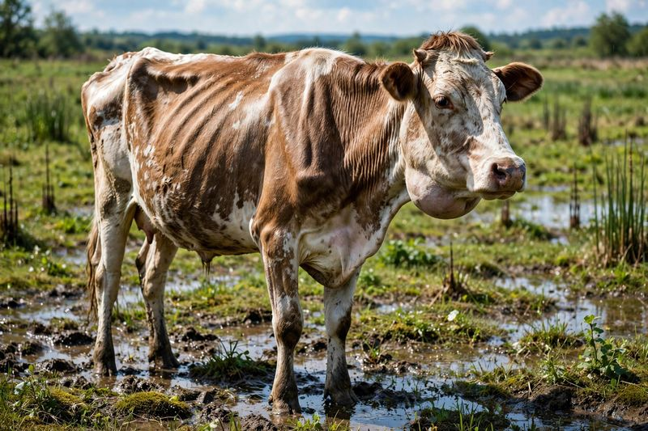
Liver Fluke in CattleOpen guide →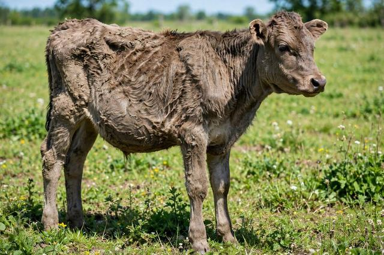
Gastrointestinal Worms in CattleOpen guide →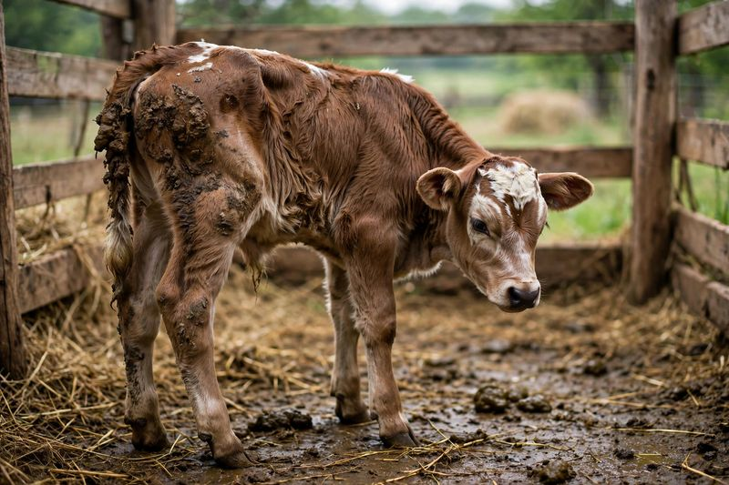
Coccidiosis in CalvesOpen guide →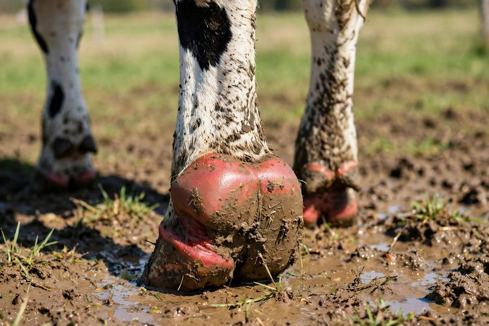
Foot Rot in CattleOpen guide →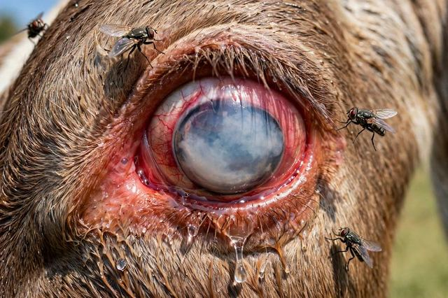
Infectious Bovine Keratoconjunctivitis (Pinkeye)Open guide → Subclinical Mastitis in Dairy CowsOpen guide →
Subclinical Mastitis in Dairy CowsOpen guide →
 Downer Cow Syndrome: Recumbent CattleOpen guide →
Downer Cow Syndrome: Recumbent CattleOpen guide →
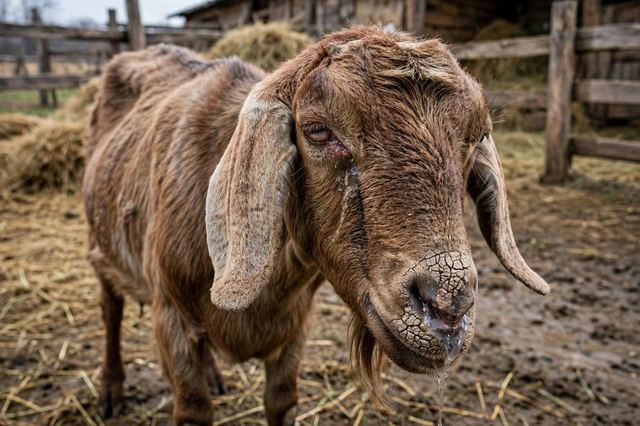
PPR (Peste des Petits Ruminants) in GoatsOpen guide →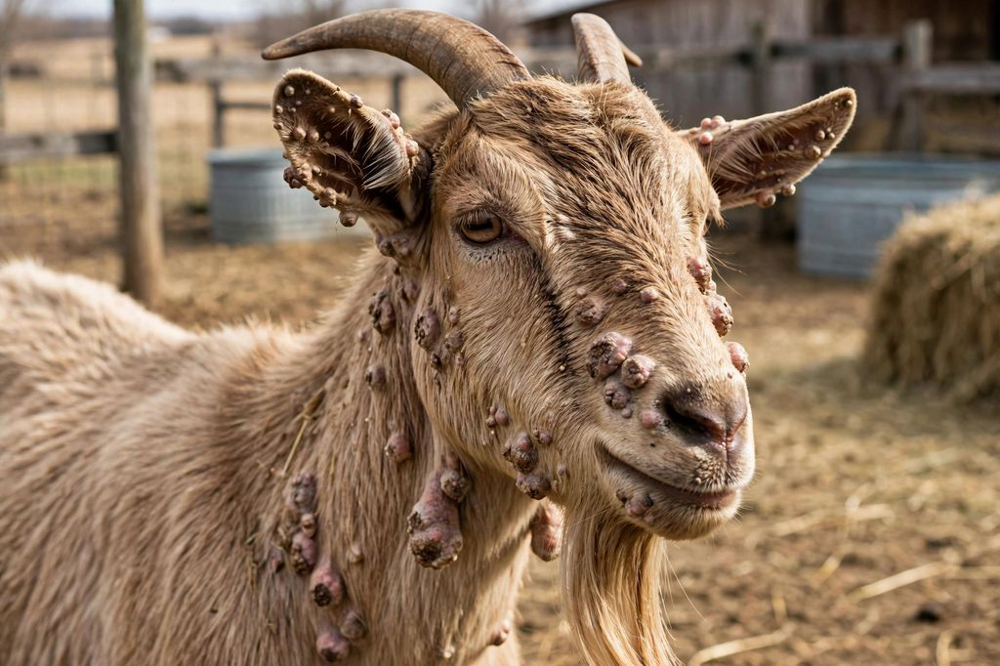
Goat Pox in GoatsOpen guide →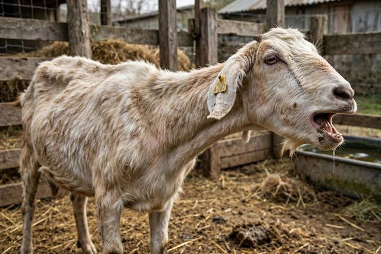
Contagious Caprine Pleuropneumonia (CCPP) in GoatsOpen guide →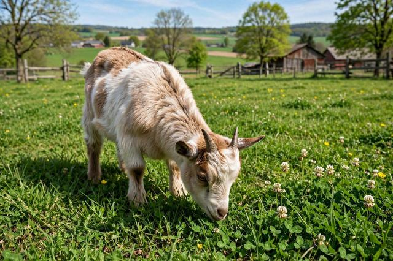
Enterotoxaemia (Pulpy Kidney Disease) in GoatsOpen guide → Orf (Contagious Ecthyma) in GoatsOpen guide →
Orf (Contagious Ecthyma) in GoatsOpen guide →
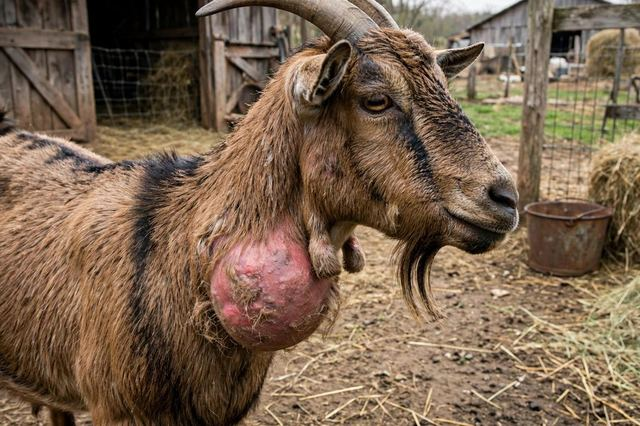
Caseous Lymphadenitis in GoatsOpen guide → Haemonchosis (Barber's Pole Worm) in GoatsOpen guide →
Haemonchosis (Barber's Pole Worm) in GoatsOpen guide →
 Johne's Disease (Paratuberculosis) in GoatsOpen guide →
Johne's Disease (Paratuberculosis) in GoatsOpen guide →
 Blue Tongue in GoatsOpen guide →
Blue Tongue in GoatsOpen guide →
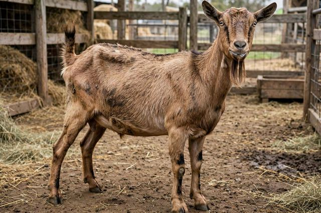
Tetanus (Lockjaw) in GoatsOpen guide →No matching disease found. Try another name.